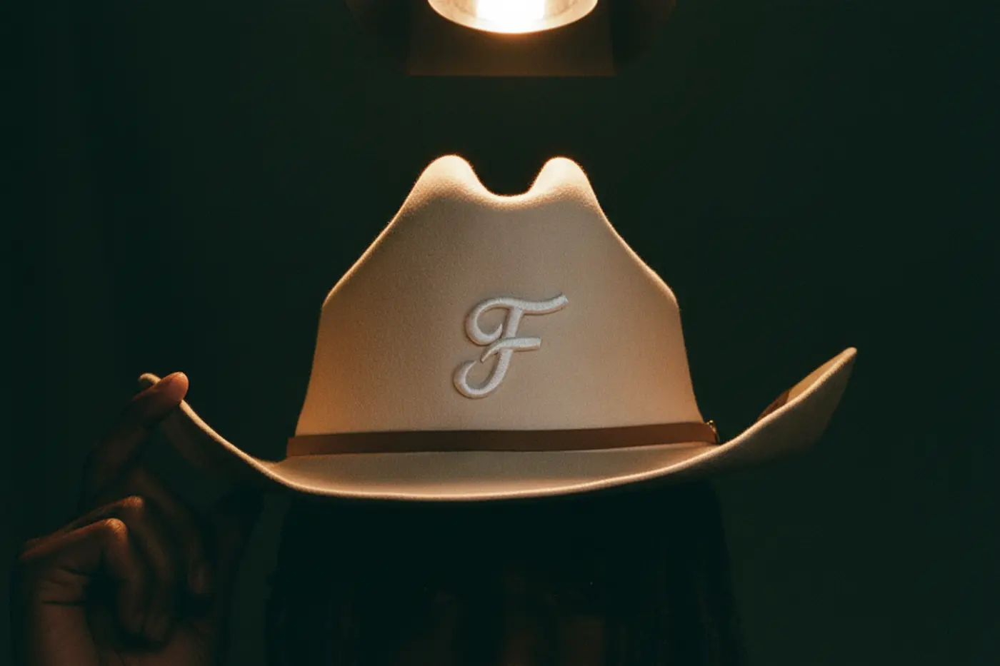
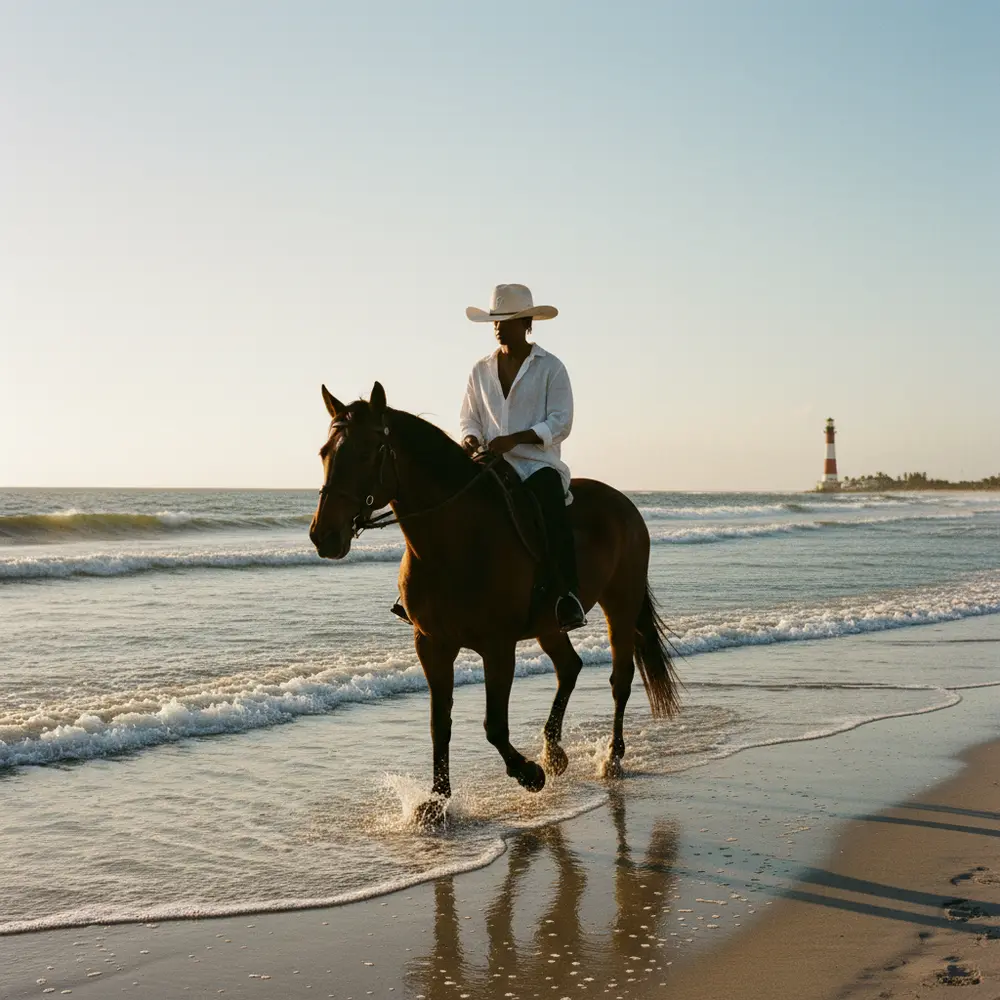
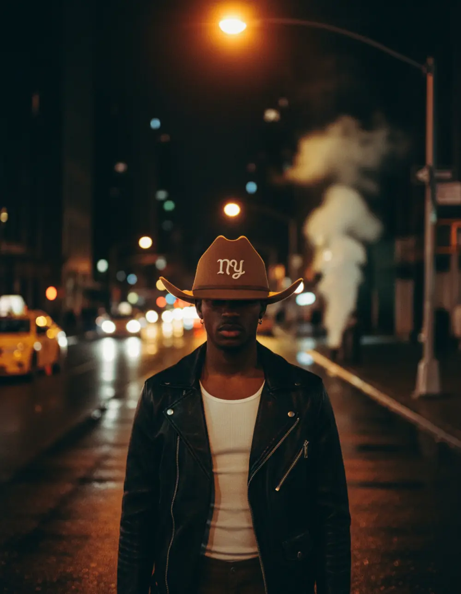
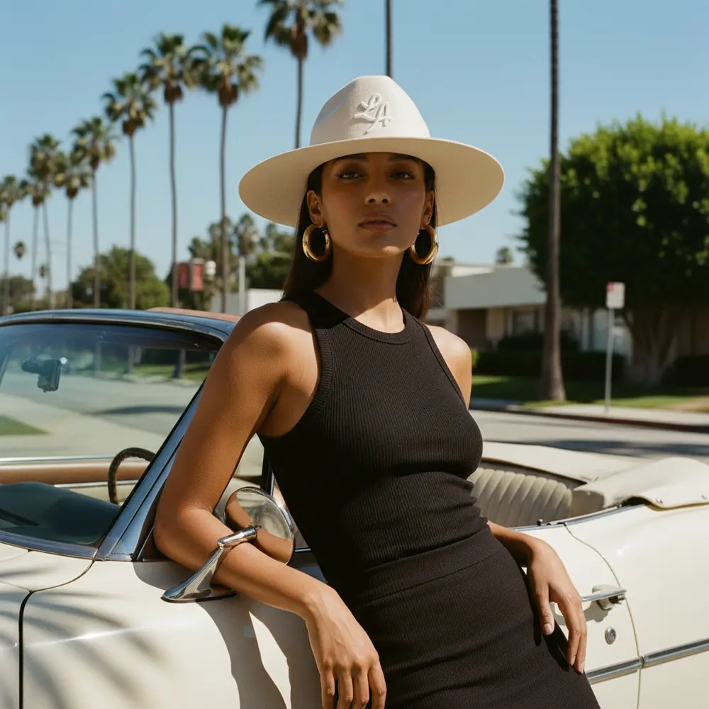

Campaign 01
Four cities.One frontier.
Every Teddy monogram is a place. We took each one home and shot it the same way: one hard light, and the brim doing the rest.

Jupiter
Home water.
Where Teddy started. Low sun across the inlet, salt on the brim and the lighthouse behind.

New York
City brim.
A Western shape downtown. Sodium light, wet asphalt and a brim that holds its line.

Los Angeles
Noon shadow.
Palm shadows on chrome and a wide brim for hard light.

Texas
The original.
Where the cowboy hat got its shape. Dusk on the highway and neon coming on.

Your city isn't here?
Stitch your own.
Put any letters on the crown in the Monogram Studio: initials, an area code, your town.
Open the Monogram Studio →